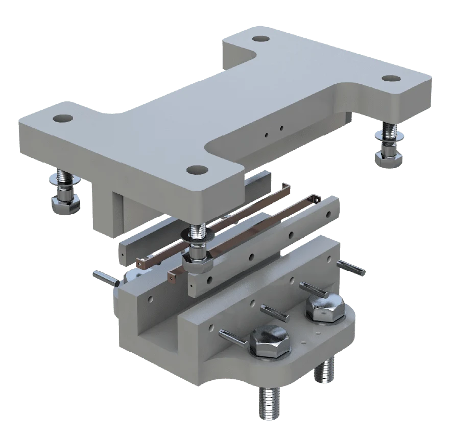

10FE
Restrains horizontal movement in both directions.
- Rotation
- Up to 0.01 radians in both axes
DESIGNED TO SUPPORT. MADE TO LAST.
Horizontal restraint. Practical movement.
Designed with future maintenance in mind.
The 3D model is packaged with this concept.
It may take a moment to prepare.

Actual 10FE model supplied for this concept. Visual exploration only; refer to approved project drawings for dimensions and specification.
THE FE RANGE
Choose the restraint and movement arrangement around your structure. The interactive model above shows the 10FE fixed bearing.
Restrains horizontal movement in both directions.
Allows movement along a defined direction while providing transverse restraint.
A guided arrangement with enhanced transverse rotation capacity.
Arrangement descriptions informed by EKSPAN’s brochure. Capacities must be confirmed for the selected bearing.
Published FE range information, not a specification for the displayed 10FE model. Confirm capacity and movement requirements with EKSPAN.
UNDERSTAND THE RESTRAINT
FE bearings resist horizontal forces. They are commonly paired with laminated elastomeric bearings that support the vertical load.
A fixed restraint arrangement resists horizontal forces in both directions. The FE bearing is not intended to support the structure’s vertical load.
A simplified movement illustration. The 3D viewer above always shows the supplied 10FE fixed model.
The FE range’s vertical translation allowance can keep the structure restrained while adjacent laminated elastomeric bearings are replaced, helping reduce the need for significant temporary works.
THE ENGINEERING DETAIL
Connect bearing design, manufacture and installation early, with practical input on future access and replacement.
Bring us in earlyIt resists horizontal forces induced into a structure. FE restraint and guide bearings are commonly used alongside laminated elastomeric bearings, which fulfil a different role in supporting the structure.
The published vertical translation allowance is +15 mm to −10 mm. Published rotation is up to 0.01 radians for 10FE and 21FE; for 31FE it is up to 0.01 radians longitudinally and 0.04 radians transversely. Confirm the applicable arrangement and specification with EKSPAN.
The range provides bolted connections at the top and base, using sockets or a separate tapered/adaptor plate as appropriate. Installation details, interfaces and any temporary transport brackets must be addressed in the approved installation procedure.
Share horizontal forces, movement and rotation requirements, adjacent bearing arrangements, interfaces, available space, design stage and installation constraints. Approved drawings and bearing schedules help the team coordinate a suitable solution.
Read the published FE range information or request project-specific drawings and documentation from EKSPAN.
View current FE product informationLET’S START WITH YOUR PROJECT
Prepare a short brief for the team.
This tool does not select or size a bearing.